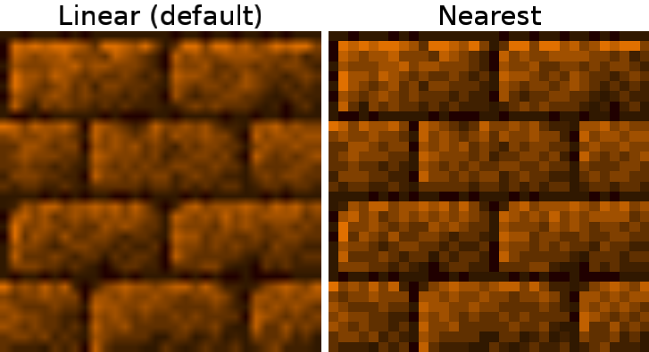

FilterMode
How the image is filtered when scaling.

Constants
linear
Scale image with linear interpolation.
nearest
Scale image with nearest neighbor interpolation.
See Also
love.graphics
love.graphics.setDefaultFilter
Texture:getFilter
Texture:setFilter